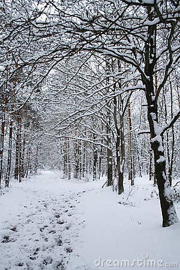

 When the snows blow wild And the day grows old, Beware, the snowman, my child. Beware, the snowman. He brings the cold. Why did that rhyme return to me? It was a rhyme my mother used to whisper to me when I was a little girl. I could almost hear Mom’s soft voice, a voice I haven’t heard since I was five…. Beware, the snowman. He brings the cold. Mom died when I was five, and I went to live with my aunt Greta. I’m twelve now, and my aunt never read that rhyme to me. So what made it run through my mind as Aunt Greta and I climbed out of the van and gazed at our snow-covered new home? “Jaclyn, you look troubled,” Aunt Greta said, placing a hand on the shoulder of my blue parka. “What are you thinking about, dear?” I shivered. Not from Aunt Greta’s touch, but from the chill of the steady wind that blew down from the mountain. I stared at the flat-roofed cabin that was to be our new home. Beware, the snowman. There is a second verse to that rhyme, I thought. Why can’t I remember it? I wondered if we still had the old poetry book that Mom used to read to me from. “What a cozy little home,” Aunt Greta said. She still had her hand on my shoulder. I felt so sad, so terribly unhappy. But I forced a smile to my face. “Yes. Cozy,” I murmured. Snow clung to the windowsills and filled the cracks between the shingles. A mound of snow rested on the low, flat roof. Aunt Greta’s normally pale cheeks were red from the cold. She isn’t very old, but she has had white hair for as long as I can remember. She wears it long, always tied behind her head in a single braid that falls nearly all the way down her back. She is tall and skinny. And kind of pretty, with a delicate round face and big, sad dark eyes. I don’t look at all like my aunt. I don’t know who I look like. I don’t remember my mom that well. And I never knew my father. Aunt Greta told me he disappeared soon after I was born. I have wavy, dark brown hair and brown eyes. I am tall and athletic. I was the star basketball player on the girls’ team at my school back in Chicago. I like to talk a lot and dance and sing. Aunt Greta can go a whole day without barely saying a word. I love her, but she’s so stern and silent…. Sometimes I wish she were easier to talk to. I’m going to need someone to talk to, I thought sadly. We had left Chicago only yesterday. But I already missed my friends. How am I going to make friends in this tiny village on the edge of the Arctic Circle? I wondered. I helped my aunt pull bags from the van. My boots crunched over the hard snow. I gazed up at the snow-covered mountain. Snow, snow everywhere. I couldn’t tell where the mountain ended and the clouds began. The little square houses along the road didn’t look real to me. They looked as if they were made of gingerbread. As if I had stepped into some kind of fairy tale. Except it wasn’t a fairy tale. It was my life. My totally weird life. I mean, why did we have to move from the United States to this tiny, frozen mountain village? Aunt Greta never really explained. “Time for a change,” she muttered. “Time to move on.” It was so hard to get her to say more than a few words at a time. I knew that she and Mom grew up in a village like this one. But why did we have to move here now? Why did I have to leave my school and all of my friends? Sherpia. What kind of a name is Sherpia? Can you imagine moving from Chicago to Sherpia? Lucky, huh? No way. It isn’t even a skiing town. The whole village is practically deserted! I wondered if there was anyone here my age. Aunt Greta kicked snow away from the front door of our new house. Then she struggled to open the door. “The wood is warped,” she grunted. She lowered her shoulder to the door—and pushed it open. She’s thin, but she’s tough. I started to carry the bags into the house. But something standing in the snowy yard across the road caught my eye. Curious, I turned and stared at it. I gasped as it came into focus. What is that? A snowman? A snowman with a scar? As I squinted across the road at it, the snowman started to move.